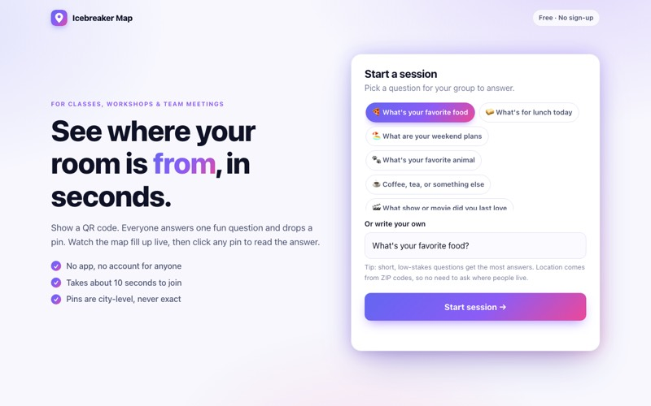
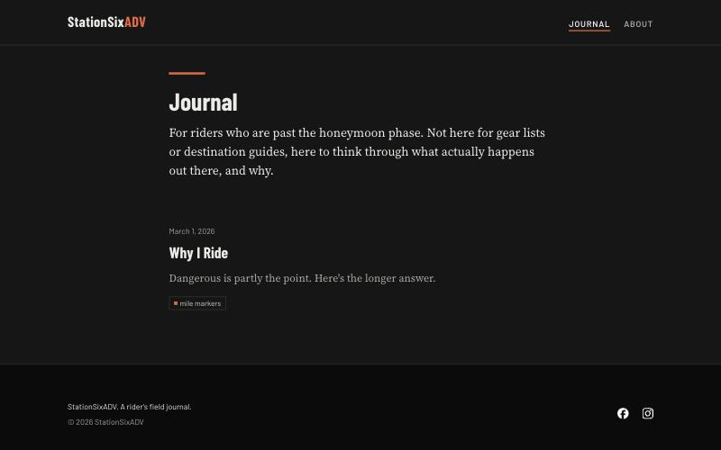
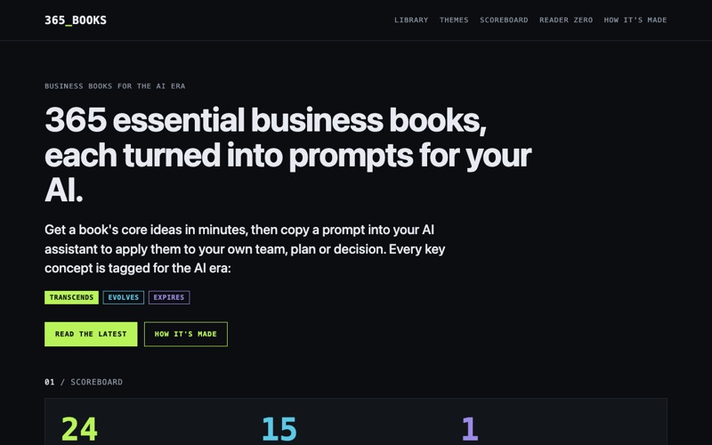
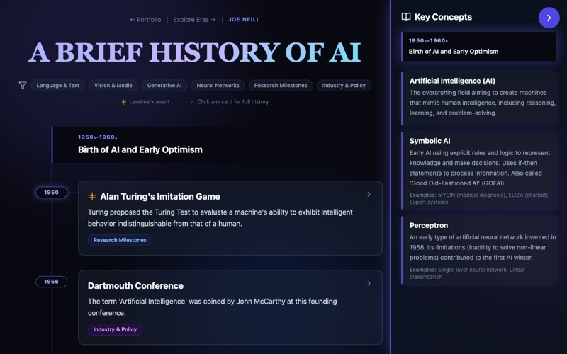
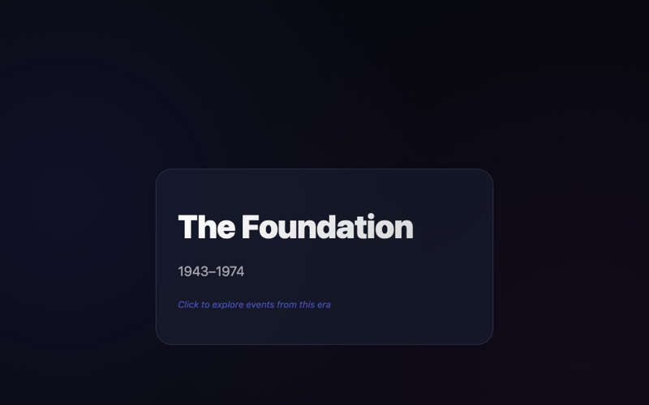
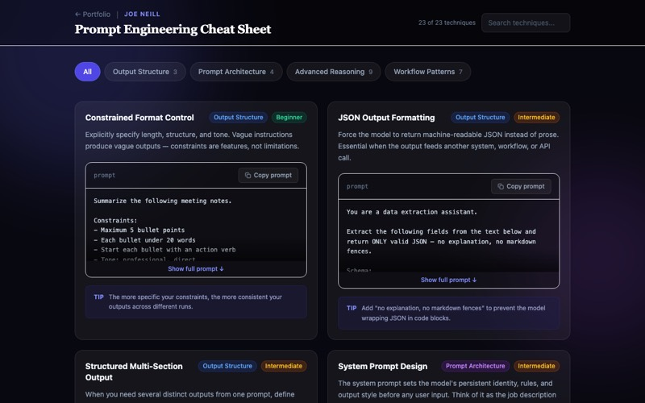
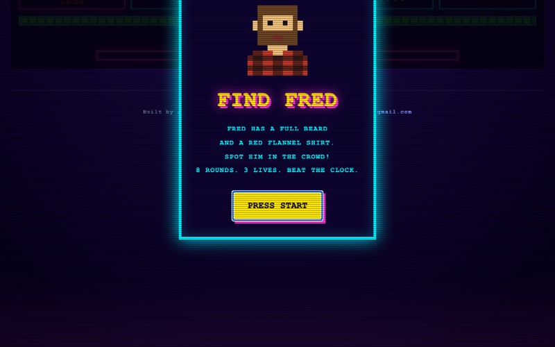
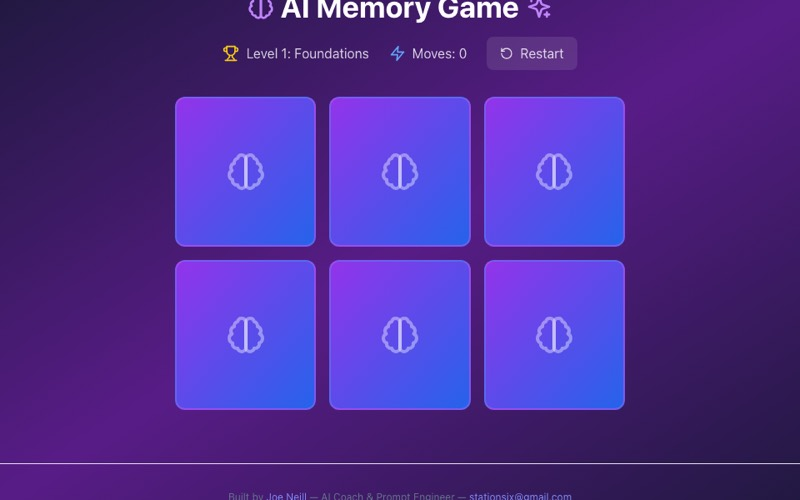

A working notebook
Things I've built while figuring out what AI is good for.
This is where I keep the things I make when I'm curious about something. Most of them started as a question (how did we get here, what does a good prompt actually look like, could I build a game in an afternoon) and turned into something you can click on.
None of it was built by a traditional developer. I work out the ideas, talk them through with AI tools, and keep going until the thing on the screen matches the thing in my head. Some of these are polished, and some are still a little rough around the edges.
Featured Build

Live app
Icebreaker Map
A room-sized icebreaker for classes, workshops and team meetings. You put a QR code on the screen, everyone answers one easy question from their phone, and the room fills in as pins on a shared map in real time.
Click any pin to read that person's answer. Pins are rounded to the city, ZIP codes are thrown away once they're used, and every session clears itself after 12 hours.
(It runs on a free host, so the first load can take a few seconds to wake up.)
Sites
Websites
Real, multi-page sites, built the same way as everything else here.

stationsixadv.com
StationSixADV
A rider's field journal for adventure motorcycling. It's written for people past the honeymoon phase, so it skips the gear lists and gets into what actually happens out there and why.
Under the hood it's an Eleventy static site with its own small design system (Day and Night color themes, condensed headings, serif body text). Every push to main builds in GitHub Actions and deploys to Azure Static Web Apps.

stationsix.github.io/365-books
365 Books
Summaries of 365 essential business books, each turned into prompts you can paste into your own AI assistant. Every key concept is tagged Transcends, Evolves or Expires for the AI era.
Under the hood it's an Astro site with one markdown file per book. The build checks every summary against a template and fails if one breaks it, then GitHub Actions publishes each push to main on GitHub Pages.
Made
Explorations
Mostly about AI itself, where it came from and how to work with it.

A Brief History of AI
An interactive timeline of the milestones in artificial intelligence, from Turing's early ideas to today's large language models.

AI Era Journey
The same history told another way, as a parallax scroll through eras. I wanted to see whether motion could make the timeline feel more like a place.

Prompt Engineering Cheat Sheet
A filterable collection of prompting techniques I keep coming back to, including structured JSON output, prompt chaining and self-critique loops.
Play
Games and toys
Small things built mostly for the fun of it.

Find Fred
An 80s arcade-style spotting game. Find Fred in a growing crowd of pixel people before the clock runs out, while the board gets bigger and the look-alikes get trickier.

AI Memory Game
A card-matching game built from AI concepts, researchers and breakthroughs, so you pick up a bit of the history while you play.
Path to production
How ideas reach production
Every project here follows a thread: which AI tool it started in, where I worked on it, where the code lives, what builds it (sometimes nothing), where it's hosted, and finally a URL you can open.
These days every change goes through a pull request, and I check it on a local preview before it merges. StationSixADV goes a step further: GitHub Actions builds it with Eleventy, and Azure spins up a preview copy of the site for each pull request before the merge to main publishes it to Azure Static Web Apps, with the stationsixadv.com domain run through Cloudflare. 365 Books also builds in GitHub Actions, with Astro, and won't publish if any book summary breaks its template.
8 shipped
Hover or focus a thread to isolate it. Click to jump to its card.
Workbench
What I've been reaching for
Building with
Claude Code, Codex, VS Code, GitHub
Made from
React, Flask, Leaflet, Eleventy, Astro
Hosted on
GitHub Pages, Render, Azure Static Web Apps
Automating with
Make
n8n is on my radar.